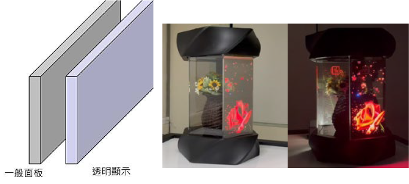

| 拼接透明顯示器 Tiling Technology for Transparent Display |
| 工研院使用 Mini-LED 作為發光源，搭配 TFT 驅動面板及拼接 技術，開發目前市場上可拼接之最小間距透明顯示器。此外， 相較於 OLED 透明顯示器，本次展出之主動驅動 mini-LED 透 明拼接顯示器使用的 Mini-LED 光源可達成較高的亮度及透明 度，因此具更佳的顯示品質及顯示模組拼接等優勢，可滿足各 種應用上之需求，適合用於商用市場  |
| 技術洽詢聯絡人：蔡婷舜 聯絡電話：03-5914480 手機: 0975916138 E-mail：tstsai@itri.org.tw |